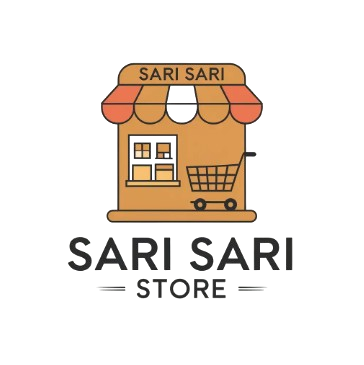
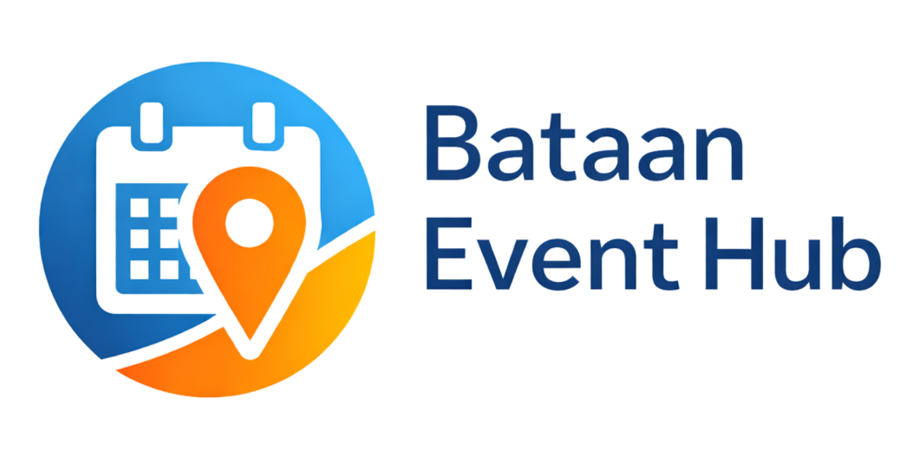
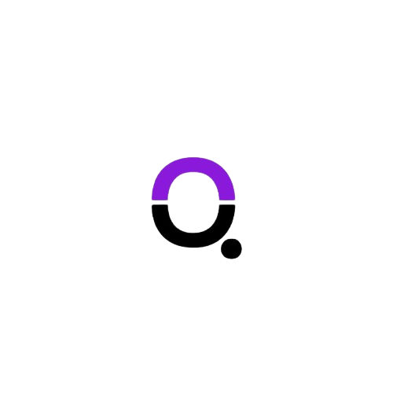

BSIT Graduate | Digital Support | Admin & Customer Support
Selected academic, personal, and OJT-related works that show my experience with digital systems, documentation, organization, and technology-based workflows.

Mobile-based product expiration monitoring application for sari-sari store inventory support.
School Project
Event management application with admin workflows, reports, reminders, and attendee features.
School Project
OJT/company-related booking management website with admin and student workflow exposure.
OJT / Company ProjectPersonal multiplayer game concept focused on UI planning, inventory systems, and Firebase-based workflows.
Personal ProjectConnect with me through my social links and contact platforms.